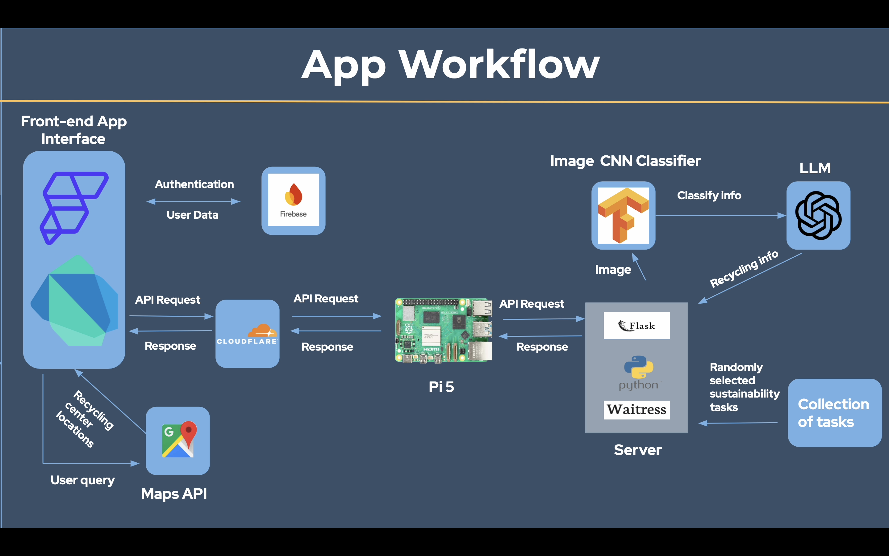

2024 Congressional App Challenge — Runner Up
As part of the 2024 Congressional App Challenge, I developed the backend for an educational recycling app that enables users to take photos of objects and receive region-specific guidance on how to recycle them.
The backend is a Python Flask server hosted with Waitress on a Raspberry Pi, exposed to the public via a Cloudflare tunnel. Image processing runs in two steps: first, a lightweight convolutional neural network classifies the image into one of several recyclable categories. Next, the classification along with the user's location data is sent to an LLM API, and the generated response is displayed to the user.
The project won runner up in our region!
